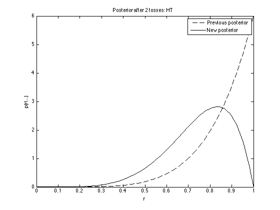
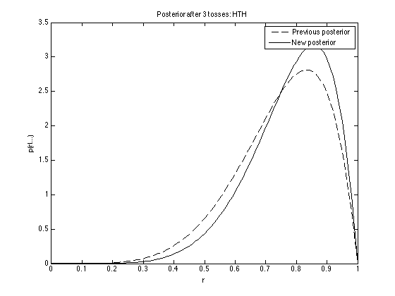
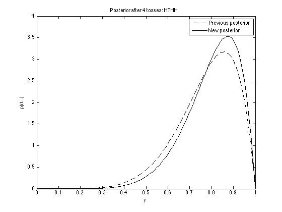
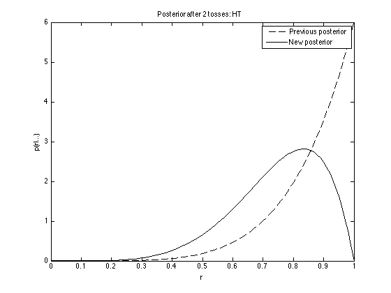
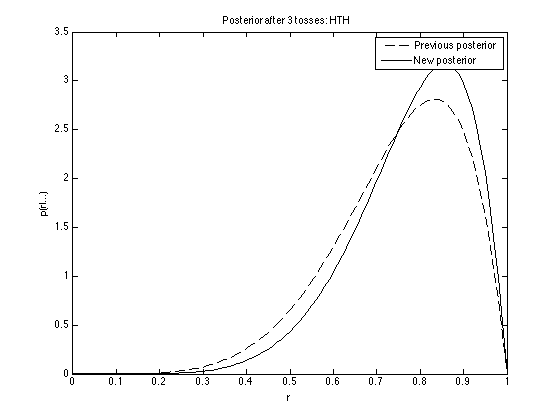
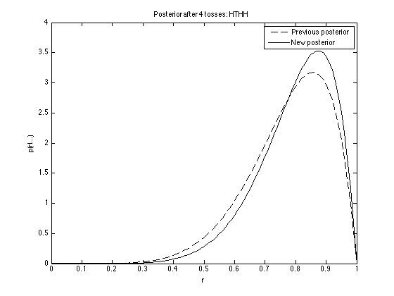
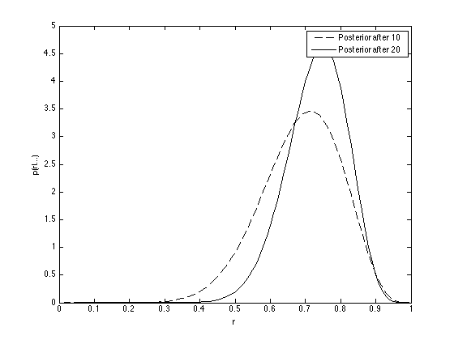
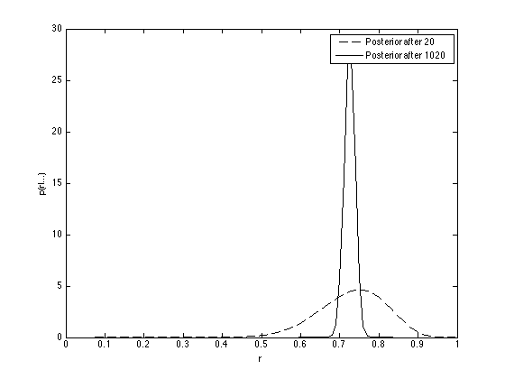

Contents
coin_scenario3.m
From A First Course in Machine Learning, Chapter 2. Simon Rogers, 01/11/11 [simon.rogers@glasgow.ac.uk] Coin game, prior scenario 3
clear all;close all;
Load the coin data
load ../data/coin_data
Plot the prior density
alpha = 5; beta = 1; fprintf('\nPrior parameters: alpha: %g, beta: %g',alpha,beta); r = [0:0.01:1]; plot(r,betapdf(r,alpha,beta)); xlabel('r'); ylabel('p(r)');
Prior parameters: alpha: 5, beta: 1

Incorporate the data one toss at a time
post_alpha = alpha;
post_beta = beta;
ch = {'T','H'};
toss_string = [];
for i = 1:length(toss_data)
toss_string = [toss_string ch{toss_data(i)+1}];
figure(1);hold off
plot(r,betapdf(r,post_alpha,post_beta),'k--');
post_alpha = post_alpha + toss_data(i);
post_beta = post_beta + 1 - toss_data(i);
hold on
plot(r,betapdf(r,post_alpha,post_beta),'k');
legend('Previous posterior','New posterior');
ti = sprintf('Posterior after %g tosses: %s',i,toss_string);
title(ti);
xlabel('r');ylabel('p(r|...)');
   
   


end
Incorporate another ten
figure(1);hold off plot(r,betapdf(r,post_alpha,post_beta),'k--'); hold on N = length(toss_data2); post_alpha = post_alpha + sum(toss_data2); post_beta = post_beta + N - sum(toss_data2); plot(r,betapdf(r,post_alpha,post_beta),'k'); legend('Posterior after 10','Posterior after 20'); xlabel('r');ylabel('p(r|...)');
Incorpoate another 1000
figure(1);hold off plot(r,betapdf(r,post_alpha,post_beta),'k--'); hold on N = length(big_data); post_alpha = post_alpha + sum(big_data); post_beta = post_beta + N - sum(big_data); plot(r,betapdf(r,post_alpha,post_beta),'k'); legend('Posterior after 20','Posterior after 1020'); xlabel('r');ylabel('p(r|...)');
Interactive example
fprintf('\n Enter H or T to add a toss result and see the effect on the posterior. Use ctrl-C to exit'); nTosses = 0; post_alpha = alpha; post_beta = beta; close all; while 1 fprintf('\nYou have currently entered %g tosses\n',nTosses); this_toss = input('Enter next toss (H or T):','s'); figure(1);hold off plot(r,betapdf(r,post_alpha,post_beta),'k--'); hold on switch this_toss case 'H' post_alpha = post_alpha + 1; case 'T' post_beta = post_beta + 1; otherwise fprintf('\n Please enter H or T'); continue end nTosses = nTosses + 1; plot(r,betapdf(r,post_alpha,post_beta),'k'); legend('Previous','New'); end
Enter H or T to add a toss result and see the effect on the posterior. Use ctrl-C to exit You have currently entered 0 tosses
Error using ==> input
Cannot call INPUT from EVALC.
Error in ==> coin_scenario3 at 69
this_toss = input('Enter next toss (H or T):','s');